If it prints False, add a ~$10 USB BLE dongle that supports peripheral mode.
3
Name your PC ELD-MARequired
Settings → System → About → Rename this PC → set it to start with ELD-MA (e.g. ELD-MA-You), then reboot.
Windows advertises this name and the app routes by the ELD-MA prefix — skip this and nothing will connect.
4
Run it & connect your phone
Open MatrackSim.exe — it shows “Advertising as ELD-MA.” On the phone, ELD app (test account) → Bluetooth → pick ELD-MA.
One phone at a time per simulator.
Field guide
Every part of the simulator, explained.
While the app runs, it looks like a truck dashboard with controls to drive and to test the connection. Pick any part on the left to see what it is and what each control does — one at a time.
Speed & gear
The big dial on the left. It shows the truck's current speed, and the gear below shows its state.
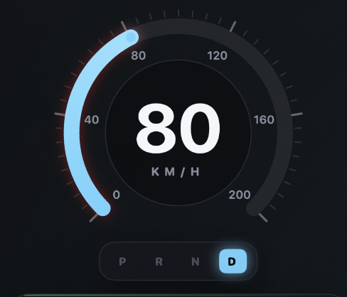
What it shows
Speed
Live speed in km/h (the tracker reports km/h; the ELD app converts to mph).
P R N D
P parked · N idling · D driving. It lights up automatically as the truck moves.
RPM (tachometer)
The dial on the right — the engine's revs per minute. It rises and falls with the speed.
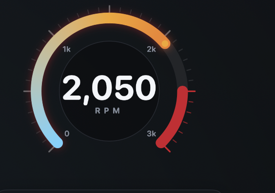
What it shows
RPM
Engine speed, modelled from the truck's speed (idle ≈ 750, higher as it drives).
Redline
The red band near the top — the danger zone, just like a real tach.
Fuel (two tanks)
The tracker reports two fuel levels — many trucks have two tanks. You'll see both as cylinders.
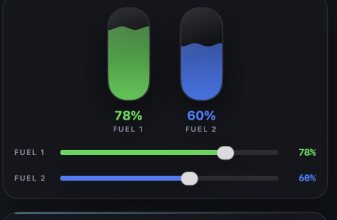
What it shows
Fuel 1 / 2
Both tank levels, sent in every live packet.
Sliders
Drag to set each level by hand — handy to test low-fuel readings in the app.
Telemetry row
The strip of numbers under the map — the facts the tracker reports about the vehicle.
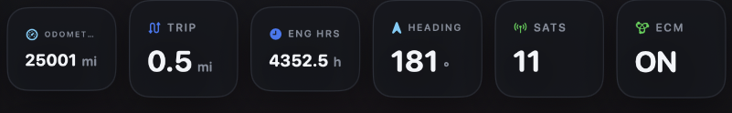
What it shows
Odo / Trip
Total miles and this-trip miles, climbing as you drive.
Engine hrs
Total engine run-time hours.
Heading · Sats · ECM
Compass direction, GPS satellites locked, and whether the engine computer is reporting.
Map & route line
The live map in the middle. The truck moves along the route in real time as it drives.
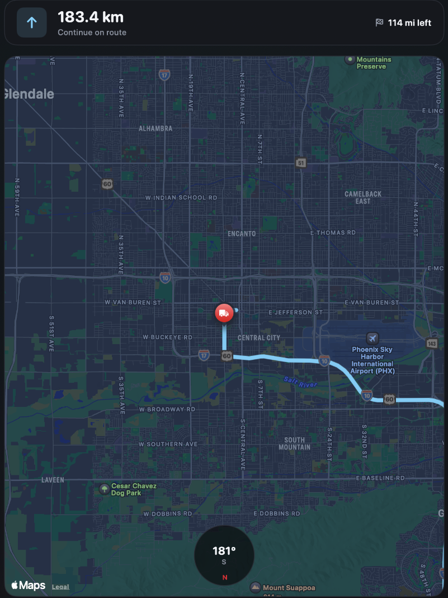
What it shows
Truck pin
The current GPS position — exactly what the app receives.
Blue line
The planned route (see Route & Drive My Day).
Compass
The heading dial keeps the direction in sync with the dashboard.
Drive controls
The panel that makes the truck go. Start the engine, set a speed, or let it cruise.
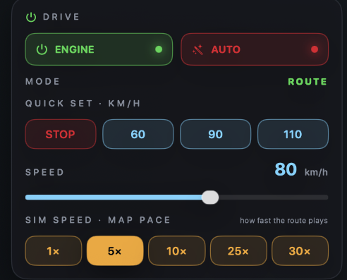
What each control does
ENGINE
Turns the engine on/off (ignition).
AUTO
Auto-cruise — the truck varies its speed on its own like real driving.
Speed
Quick presets (60 / 90 / 110 km/h) or the slider for an exact speed.
SIM SPEED
How fast the route plays on the map: 1× to 30× (30× = a full day in minutes).
Route & Drive My Day
Pick where the truck drives — a real route on the map, or a whole day in one click.
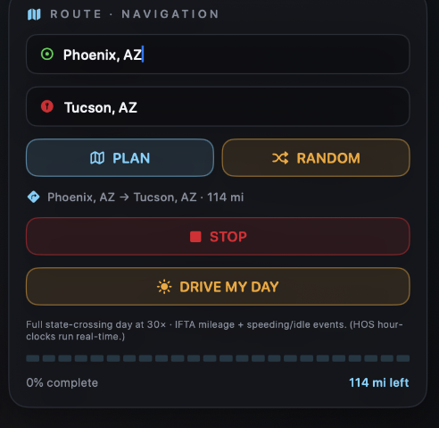
What each control does
From → To
Type two cities and press PLAN (or RANDOM) to load a route.
DRIVE ROUTE
Drives the loaded route on the map.
DRIVE MY DAY
One click → a long state-crossing day at 30× with built-in speeding & idle events (for IFTA mileage).
The hours-of-service clocks run on real time, so a sped-up "day" builds mileage and events, not compressed HOS hours.
Scenarios
21 ready-made situations you can replay with one click — no manual setup.
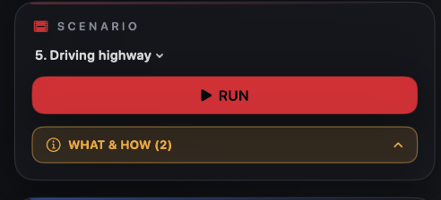
How to use it
Pick · RUN
Choose a scenario and press RUN — it replays the exact packet sequence.
WHAT & HOW
Opens step-by-step notes on what to check in the ELD app for that scenario.
Connection & signal
Control the Bluetooth link — weaken it, or drop it entirely to test how the app reacts.
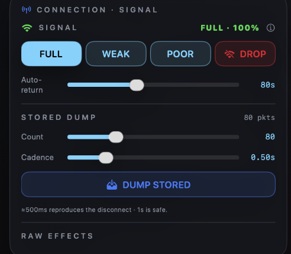
What each does
FULL / WEAK / POOR
Signal strength. WEAK and POOR drop some packets but stay connected (like a fringe area).
DROP
Forces a real disconnect — the truck "drives out of range." The app drops, just like the field.
BACK / Auto-return
Reconnects — instantly with BACK, or automatically after the timer.
Stored dump
A real tracker saves packets while offline, then unloads them on reconnect. This replays that.
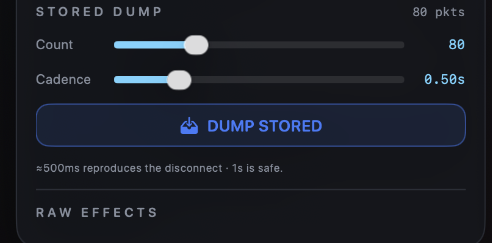
How to use it
Count
How many stored packets to send.
Cadence
How fast. ≈500 ms reproduces the disconnect bug; 1 s is safe.
DUMP STORED
Fires the dump on demand.
This reproduces the real disconnect bug: a fast dump (≈500 ms) makes the tracker disconnect, while 1 s is safe — use it to confirm the fix.
Live packet stream
The running log at the bottom — every message going in and out. The ground truth of the connection.
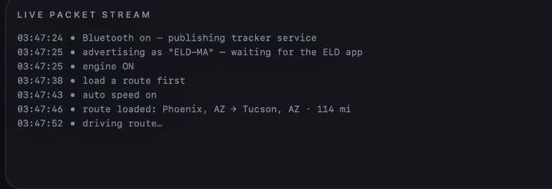
How to read it
→ outgoing
Packets the simulator sends to the app (telemetry, replies).
← incoming
Commands the app sends to the tracker (readvin, watchdog, etc.).
Export
Save the whole log to a file for a bug report.
Packet types
Each line in the stream starts with a code that says what kind of packet it is.
The ones you'll see
LP
Live position — the main one: ignition, rpm, speed, location, time, fuel, sats.
LI
Ignition — engine powered up / shut down.
LV
Version — device model, VIN, firmware.
LD
Diagnostics — fault codes (DTCs).
S…
Stored packets — the ones dumped after a reconnect.
ACK
A short acknowledgement that a command was received.
Diagnostics (DTC)
Inject engine fault codes so the ELD app shows diagnostics — then clear them.
What each control does
Fault codes
Tap a code (e.g. P0143) to arm it — the app sees it on the next check.
CLEAR
Removes all active faults.
What you can test
A full test rig, not just a viewer.
Everything the real Matrack tracker does — plus the failures you need to reproduce.
Drive the truck
Start the engine, set a speed or let it auto-cruise, and watch it drive a real route on the map at 1× to 30× — speed, RPM, fuel, GPS all streaming live.
Break the connection
Weaken the signal or DROP the Bluetooth link to test out-of-range and auto-reconnect — just like the field.
21 ready scenarios 1-click
Replay real situations — signal loss, idle & shutdown, stored backlog, unassigned driving — in one click.
Reproduce the dump bug
Fire a fast stored-dump (≈500 ms) to reproduce the disconnect bug — and confirm the 1 s fix.
DRIVE MY DAY
One click → a full state-crossing day at 30× with built-in speeding & idle events, for IFTA mileage.
Live packet stream
Watch every packet in and out in real time, and export the log for a bug report.
Help
Quick answers
The Mac won't open the app
It's an in-house app, so macOS asks once. Right-click → Open → Open (or System Settings → Privacy & Security → Open Anyway). Completely safe.
My phone doesn't see “ELD-MA”
Make sure the computer is named ELD-MA… with Bluetooth on. Toggle Bluetooth off/on. On iPhone you can also Forget the old device, then reconnect.
Can more than one phone connect at once?
It's built for one phone at a time. A second phone can connect, but both then see the same truck and the same packets, and if one disconnects it disrupts the other. For two test devices, run a second copy of the app on another computer.
Can two people use one computer?
One computer = one truck. For several people driving at once, each needs their own computer running the app (each named ELD-MA…) on their own test account.
It disconnected by itself
Expected if you pressed DROP (out-of-range) or ran a fast stored-dump — that's the point. Press BACK to reconnect.